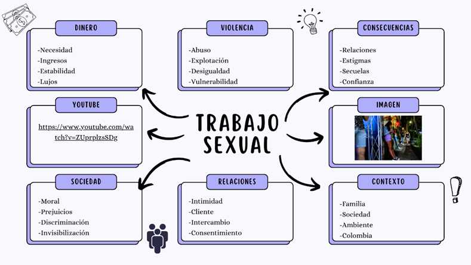

ANÁLISIS CENTRAL
Más que una sola historia: seis dimensiones que se cruzan
El punto de partida de esta investigación relaciona dinero, violencia, consecuencias, sociedad, relaciones y contexto. La intención no es afirmar que todas las mujeres viven lo mismo, sino observar cómo esas dimensiones pueden combinarse de maneras diferentes.
Leer el análisis →